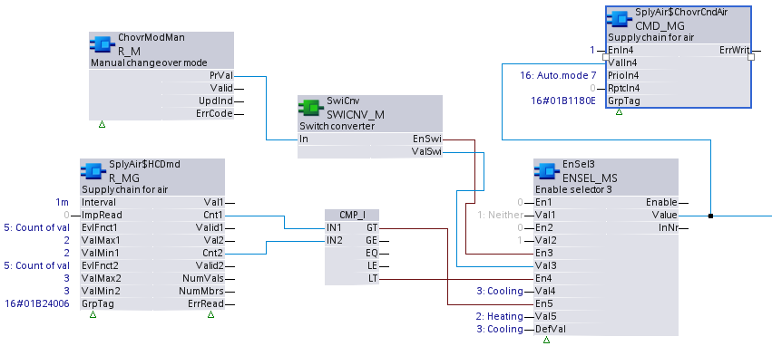

CMD_MG: Command multistate group
CMD_MG distributes, at a particular priority, a Present value of datatype Unsigned to multiple data points for a specific Group data tag.
Proprietary objects are needed for grouping infrastructure: one Group manager object and one or more Group member objects. The individual member data points are grouped and referenced via the Group member object(s).
CMD_MG writes Value / Priority pair(s) for a particular Group data tag to the Group command property of the Group manager object. The data is passed from the Group manager object to the Group member object(s) where it is distributed to the intended member data points with matching Group data tag.
Compatible data points:
- Multistate output [MO]
- Multistate configuration value [MCnfVal]
- Multistate process value [MPrcVal]
- Third party objects containing the required properties.
Refer to data point objects for a detailed description of the BACnet data points.
Required properties of grouped data points:
- Present value
- State flag
Operate with priorities
The function block uses 2 approaches to control if operating with priorities:
1. Exclusive control (planned for priorities 1...5, 9...12, 14...16)
- Initialized at startup
- Multiple input sets of a function block cannot command the same priority.
2. Last win control (planned for priorities 7, 8, 13)
- Not initialized at startup.
| Exclusive control | Last win control |
|---|---|---|
Behavior at plant startup | [EnIn1] = 0 | [EnIn1] = 0 |
[EnIn1] = 1 | [EnIn1] = 1 | |
Command process | If [EnIn1] changes from 0 to 1. | If [EnIn1] changes from 0 to 1. |
If [EnIn1] = 1 and [ValIn1] changes. | If [EnIn1] = 1 and [ValIn1] changes. | |
If [EnIn1] = 1 and [RptcIn1] = 1. | If [EnIn1] = 1 and [RptcIn1] = 1. | |
Release | If [EnIn1] changes from 1 to 0. | If [EnIn1] changes from 1 to 0. |
If [EnIn1] = 0 and [RptcIn1] = 1. | If [EnIn1] = 0 and [RptcIn1] = 1. | |
Behavior in the event of commanding from another source | [EnIn1] = 0 | [EnIn1] = 0 |
[EnIn1] = 1 | [EnIn1] = 1 |
The data point periodically saves the value of priority 8 to controller memory. After a power outage, the value is restored in the property 'Priority array' and evaluated by the data point. All other priorities are not saved to controller memory.
Operation with other input sets of function block ([EnIn2]...[EnIn4], [ValIn2]...[ValIn4], [RptcIn2]...[RptcIn4]) is the same.
Pin description (inputs)
BaObjRef | |
|---|---|
BA-Object reference Structure [BaObjRef] defines a bound connection between XFB and BACnet object. The binding occurs automatically. Manual configuration attempts are not necessary and can result in system errors. | |
DeviceId | Device identifier Double word (default value: 16#3FFFFF) [DeviceId] comprises object type and object instance in a single identifier. It is used to identify device object: local or remote. Local device object could also be identified by value 16#3FFFFF. |
ObjectId | Object identifier Double word (default value: 16#3FFFFF) [ObjectId] comprises object type and object instance in a single identifier. It is used to identify object within a device. |
ItemId | Item identifier Integer (default value: -1) [ItemId] represents an item index in the functional view node object, which references the BACnet object. [ObjectId] and [ItemId] together define an indirect access reference to the BACnet object. Value -1 indicates that direct binding is used. |
GrpTag |
|---|
Group data tag Double word (default value: 0) [GrpTag] defines the specific group data (present value, priority) for centralized distribution by the XFB. The system provides predefined and also user definable tags. The [GrpTag] is typically set by the application developer in CFC and must not change during runtime. It must be set to a tag that matches the datatype of the XFB. |
EnIn1...4 | |
|---|---|
Enable input 1 Boolean (default value: False) [EnIn1] controls whether [ValIn1] is commanded at the priority held by [PrioIn1] or if the priority is released. [EnIn1] belongs to one of four input sets, each containing [EnInX], [ValInX], [PrioInX], [RptcInX], and [DscdcInX]. These input sets command the data points at different priorities as needed. [EnIn1] can be parameterized (set by developer), or it is linkable in the CFC chart and calculated by the control program during runtime. [EnIn2]...[EnIn4] functionality is identical to [EnIn1]. | |
1 (True) | The priority held by [PrioIn1] is commanded. |
0 (False) | The priority held by [PrioIn1] is released if it is not currently active by a different [EnInX] set to True. |
ValIn1...4 |
|---|
Value input 1 Integer (default value: 1) The value to be commanded at [PrioIn1]. [ValIn1] can be parameterized (set by developer), or it is linkable in the CFC chart and calculated by the control program during runtime. [ValIn1] will be commanded at the priority held by [PrioIn1] if [EnIn1] is True and [ValIn1] changes. [ValIn2]...[ValIn4] functionality is identical to [ValIn1]. |
PrioIn1...4 | |
|---|---|
Priority input 1 Integer (default value: 17) [PrioIn1] holds the priority that accompanies [ValIn1]. [PrioIn1] is parameterized and cannot be changed during runtime. A value of 17 means the input set is not being used. [PrioIn2]...[PrioIn4] functionality is identical to [PrioIn1]. Note | |
Priority range | 1...16 See restrictions on priority 6 and priority 8 below. |
Exclusive control | Priorities 1...5, 9...12 and 14...16 On start-up of the control program, the function block uses exclusive control to initialize any assigned priorities in ranges 1...5, 9...12 and 14...16. At runtime this function block does not support exclusive priority control. The last valid command or release controls the priority. Due to exclusive control during start-up, two or more input sets on the same function block must not share a common exclusive control priority, otherwise a conflict will result. |
Last wins | Priorities 7, 8 and 13
|
Priority 6 | Per BACnet, command priority 6 is reserved for minimum on/off functionality. Commands at priority 6 are rejected by the BACnet object. To provide minimum on/off functionality, the control program should contain the feature and command at another priority. |
Priority 8 | Per BACnet, command priority 8 is for manual operator use and is not typically assigned on the function block. Last wins functionality could allow the control program to change or release an operator command. |
RptcIn1...4 |
|---|
Repeat command input 1 Boolean (default value: False) [RptcIn1] forces the repetition of a command or the release a priority.
[RptcIn2]...[RptcIn4] functionality is identical to [RptcIn1]. Note [RptcIn1] is linkable and will typically be calculated and set by the control program. |
DscdcIn1...4 |
|---|
Discard command input 1 Boolean (default value: False) [DscdcIn1] is used to configure [ValIn1] command repeating in case of restart or to re-establish communication with group member’s automation station. [DscdcIn1] is parameterized and cannot be changed during runtime.
[DscdcIn2]...[DscdcIn4] functionality is identical to [DscdcIn1]. |
Pin description (outputs)
ErrWrit | |
|---|---|
Error while writing Integer (default value: 20) The error code value for errors encountered during accessing or writing to the group manager object. Successful distribution of a command to group members cannot be indicated. | |
= 0 | No error. |
> 0 | Error, see XFB error codes. |
Use case examples
NOTICE

Note
Graphics reflect examples of XFB implementations; See ABT for current examples of CFC.
CMD_MG: Supply chain for air.
